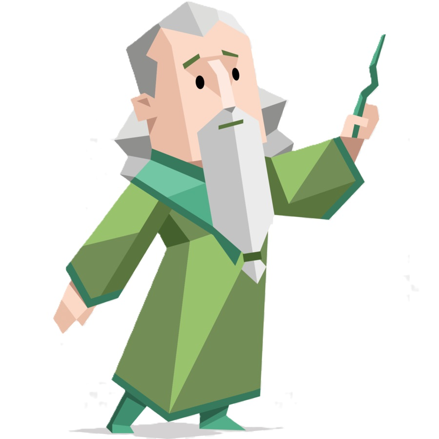

INFJ Personality Type

I (Introverted)
I'm somewhat introverted. To put it in a vivid way, the capacity of my social battery is small. When I converse with others, the charge in my social battery starts to drain. The more people I interact with, the faster it depletes. When my social battery is completely drained, I need to be alone to recharge.
N (Intuitive)
I enjoy daydreaming in the realm of the mind. Compared to hands-on tasks, I prefer theoretical learning. I often have impractical ideas in my head, so some people call me naive. I respond to them, only naive people can write interesting poetry.
F (Feeling)
When I have to make a decision about something, I tend to base it on feelings and values rather than on logic and reason.
J (Judging)
Planning for each day makes me feel fulfilled, and after all, being organized is better than being spontaneous. Speaking of my computer bag, I place my iPad and laptop in different compartments, and there's a small pouch specifically for my chargers.